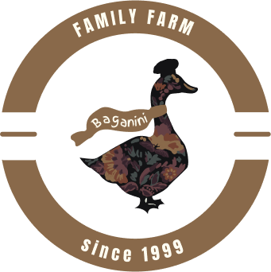

Семейная ферма
Семейная ферма
Baganini -место,
где по-домашнему вкусно...
Разворачивается гамма еды, поднимаясь до верхних и тонких нот. Это восходит созвездие закусок. Жёлтой планетой стоит над горизонтом сыр: чтобы он был вкуснее, его сделали круглым и назвали голландским. Его окружает многоточие редисок, нежинские огурцы и помидоры.
Всё это вкусно и прекрасно, но не на них сверкают вилки и неистовствуют ножи! Он, величественно отдыхающий среди мочёных яблок и маринованных слив, производит впечатление взрыва: при взгляде на его подрумяненную до цвета красного дерева кожу звенит в ушах. Это жареный гусь.
Виктор Кин